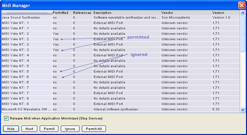
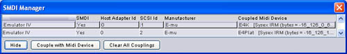

A bi-directional midi connection to the Emulator must be established under the following conditions
A bi-directional midi connection to the Emulator must be established under the following conditions
The first time you run ZoeOS it will auto-hunt for devices on all the ports it has access to - in future device hunts this can be time consuming
if you have lots of ports and you know the Emulator will be permanently connected on one particular pair of in/out ports.
From the menu item Manage/Midi you can set arbitrary ports to be ignored - in future ZoeOS will not try to hunt on these ports.
A port that is not ignored is deemed permitted. Remember to permit any relevant ports when you introduce new Emulators to the system.

A SMDI connection to the Emulator is highly desirable, but ultimately not neccessary to use ZoeOS.
SMDI enables:
To use SMDI in ZoeOS you will need a SCSI connection between the computer running ZoeOS and the Emulator. Refer to the Emulator manual on how to make the SCSI connection.
ZoeOS looks at the Emulator in two different ways - Midi and SMDI. Therefore you need to couple the Midi view to the SMDI view.
This is done through the SMDI Manager which is accessed from the Manage/SMDI menu item. If you have successfully made a SCSI connection you will see the Emulator listed in the
SMDI table. Select the relevant Emulator and press Couple to midi device. You will then be presented with a choice of Emulators that are already marshalled in the system.
Choose the relevant device to make the coupling.
